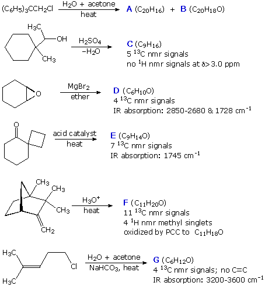

Six reactions in which molecular rearrangement takes place are shown below. Formulas and some other information about the products are provided. Draw a structural formula for each of the designated products.
To draw a formula use the Drawing Window on the right below. Do not draw hydrogen atoms, and do not attempt to indicate stereochemical configurations. When you are finished, check your answer by pressing the appropriate Check Product button.
 |
|
|
| |
| A response to your answer will appear in the evaluation window below. | |